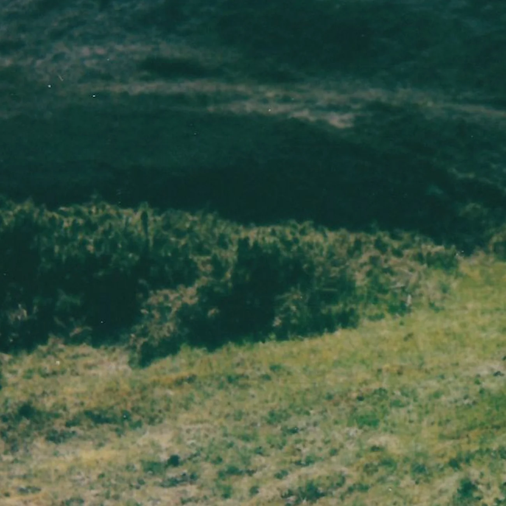
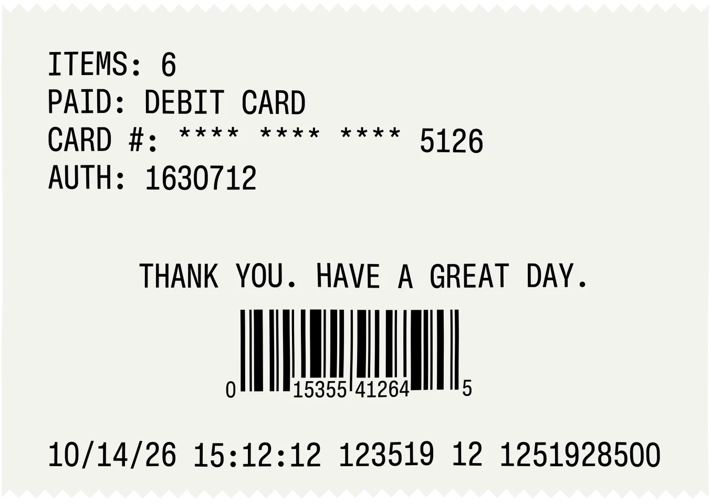
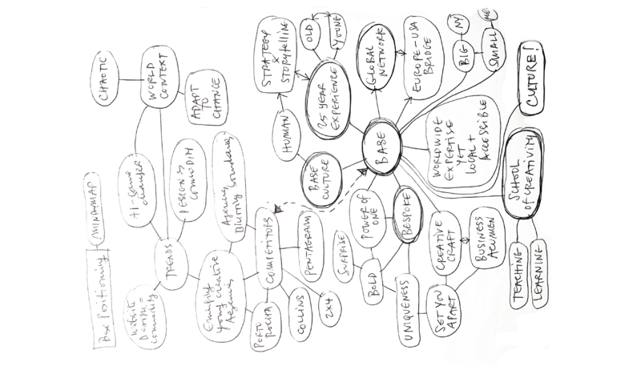
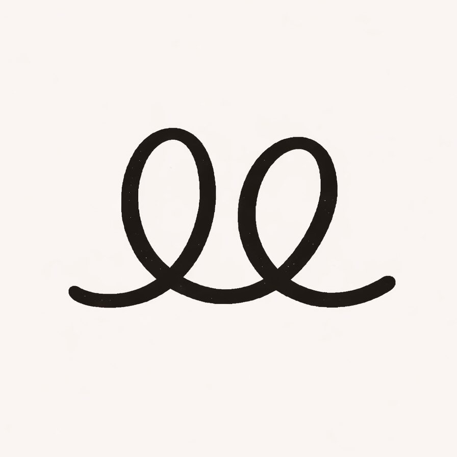
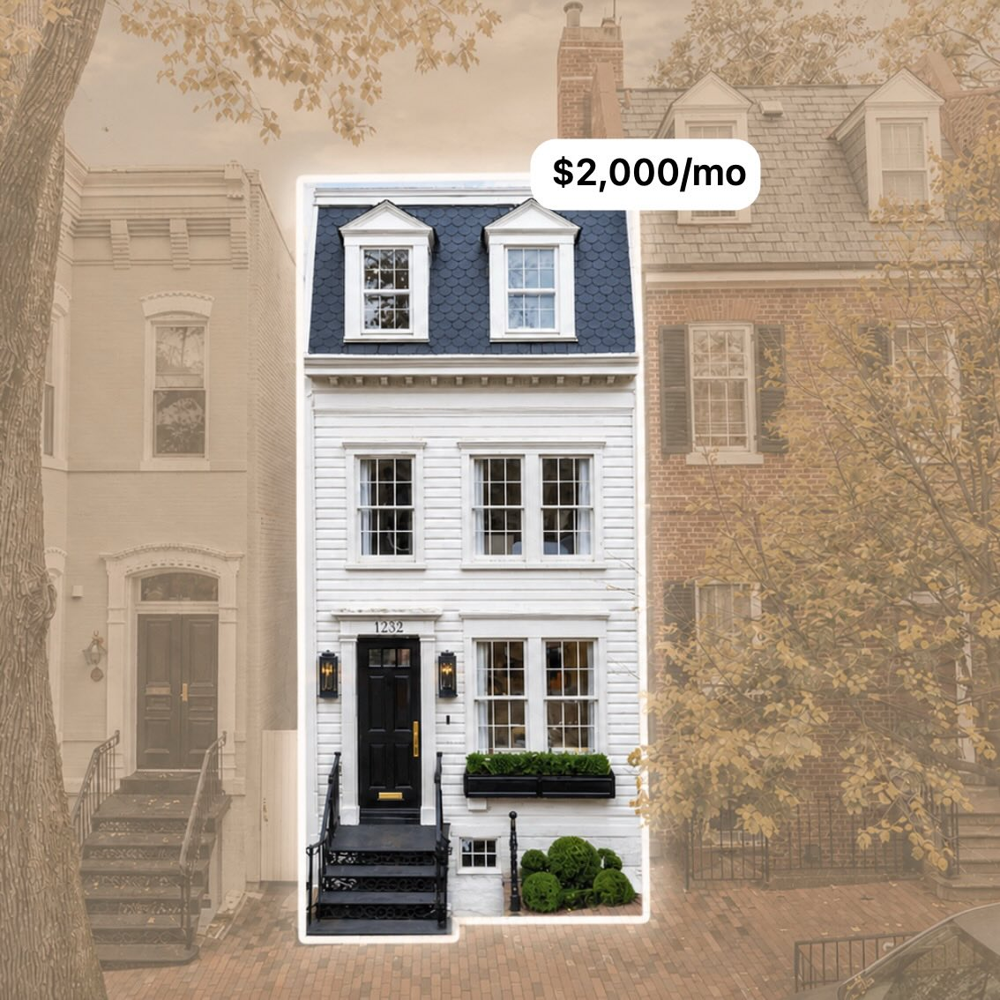
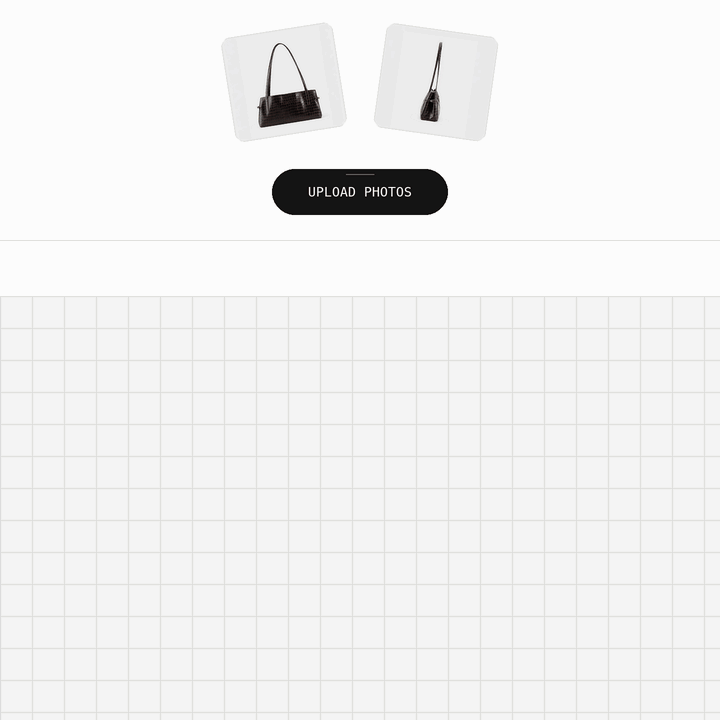

Popular
More tools and skills
No tools or skills found.
Tidle
tidle.app

I designed and shipped Tidle for iPhone and iPad, building reminders and widgets, integrating Stripe payments, and using Firebase for the backend.
PwC

I designed role-based access for an airline’s safety reporting app on Salesforce CRM, defining what 80,000+ employees across 40 user roles could see and do.
I led the design and rollout of Salesforce lead-to-opportunity workflows for a manufacturer.
Maslo


I built Maslo, a map-first DC rental search, and integrated city open data for budget and walkability filters, nearby Metro stops and grocery stores, and walking routes.
odesa

I’m building odesa, an AI-assisted sewing board that turns a product link or photos into a sewing plan with a draft pattern, material suggestions, and a 3D preview.
Tricount

I’m redesigning Tricount, a shared-expense app, to make it easier to see who paid, what everyone owes, and how to settle up.
A print-inspired motion collage for Tricount. Photocopied hands sway together as color spreads across the frame, turning the act of splitting a bill into a shared gesture.
No projects match these filters.